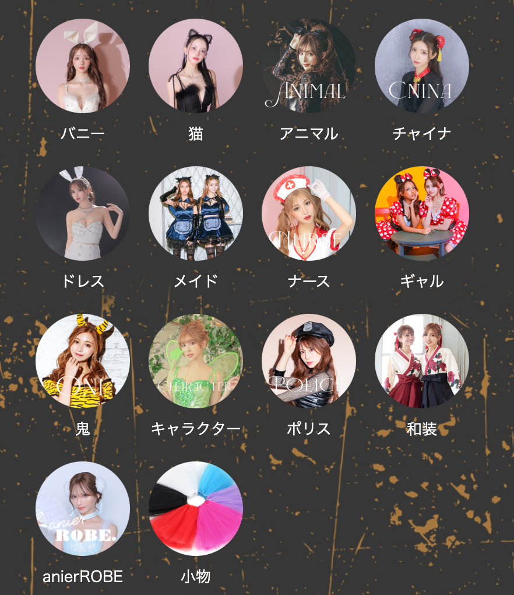
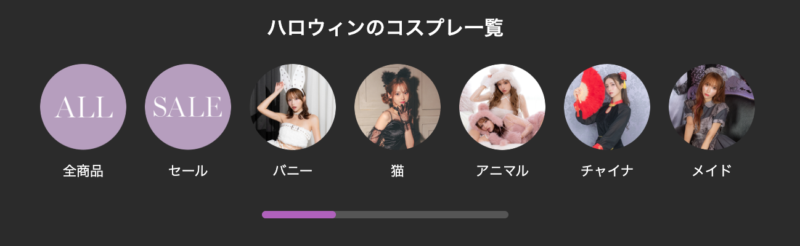
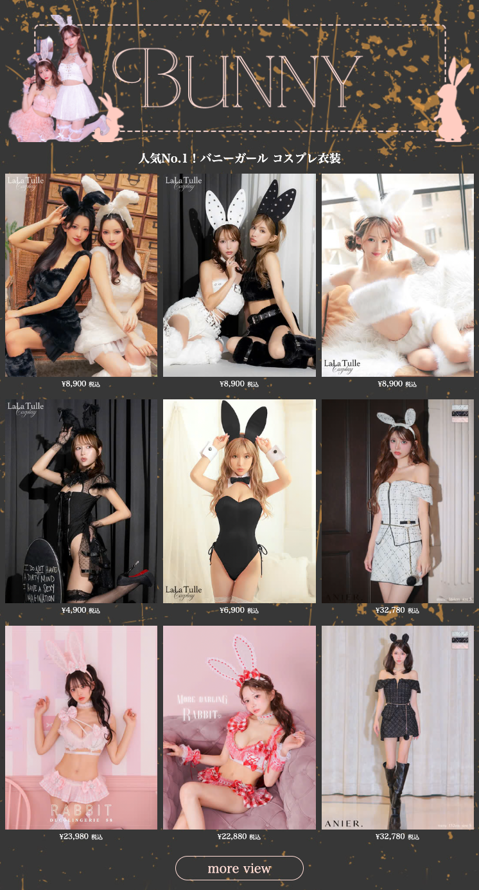
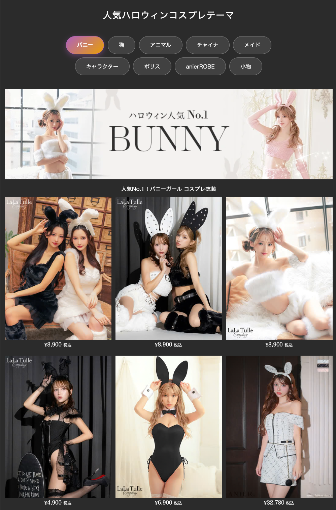
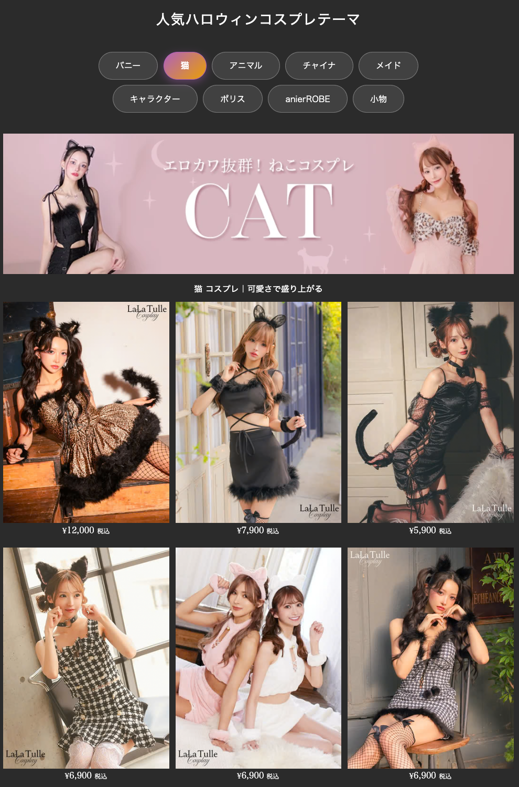
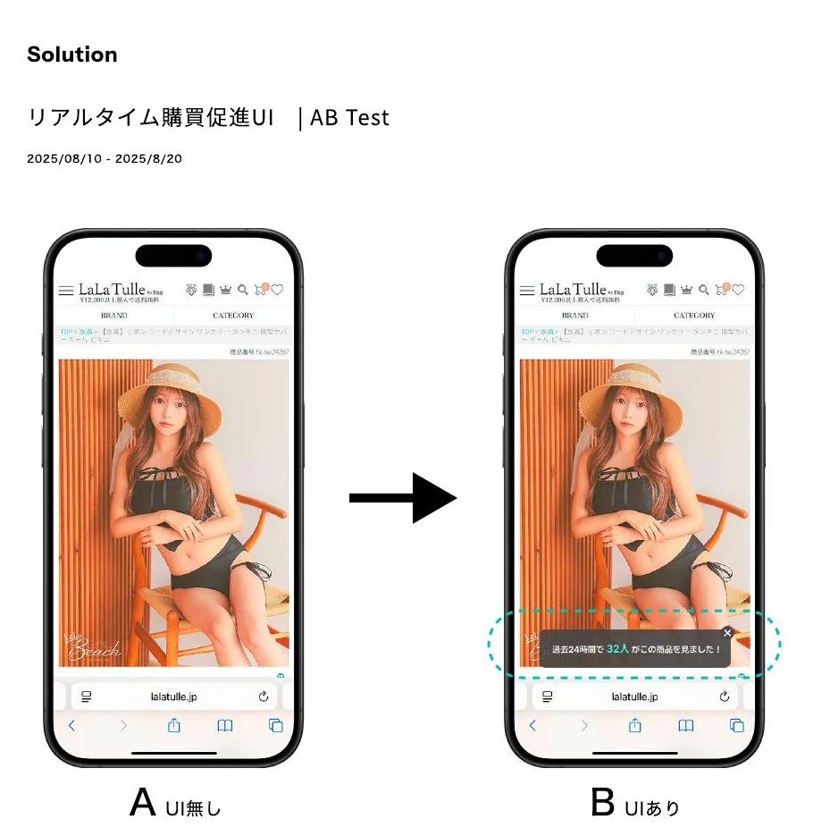
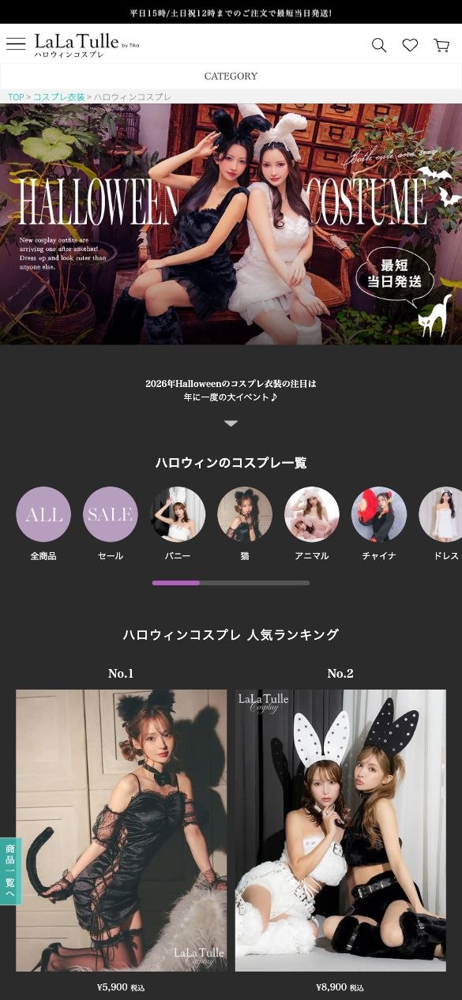

商品リスト閲覧
+54%E-COMMERCE UX / CASE STUDY
LaLaTulle
探す入口から、
欲しい一着まで。
特集・ホーム・商品詳細の購買導線を改善。行動データから課題を捉え、UI設計・実装・検証まで担当しました。
商品一覧までの、
長いスクロールを短く。
表示量を絞りながら、探し直せる入口は残す。2025年秋の1次改善と、11月4日のカテゴリ切替への再改善を分けて整理します。
DESIGN DECISION 01
カテゴリは、縦に並べず横に選ぶ。
全商品・セールも同じ入口へ。カテゴリへの移動を、長いページの中から探す操作にしない。
ポートフォリオのFigmaに提供された過去画面の素材です。後述の2026年11月8日の公開サイトキャプチャとは区別しています。


DESIGN DECISION 02
装飾より、商品を見せる。
写真を大きくし、カテゴリの違いが一目で伝わるバナーへ。
DESIGN DECISION 03
9点から6点へ。
次のカテゴリを、もっと近くに。
3列は維持し、3段から2段へ。見比べる量を残し、次へ進むまでの距離を抑えました。


RESULT / 2025.09.26–10.25 vs. 2024.09.26–10.25
閲覧は増加。
カート追加率は、次の課題に。
商品詳細閲覧
+30%カート追加率
−4.56%収益
+9.33%既存ポートフォリオPDFの集計値。流入・販促の影響を含み、UI改善単独の効果とは断定できません。−4.56%は原資料の相対変化表記で、ポイント差ではありません。原資料の分母は未確認です。
SEARCH VISIBILITY / GSC · 2025
10月1日の平均掲載順位は、2.2。
GSCの実データでは、2025年10月1日の日別平均が2.2、7月29日〜10月30日の期間平均は6.8でした。1日の値と、期間全体の値を分けて示しています。
当時の観察メモには、9月末に一時1〜2位、その後10月6日に8位へ低下したと記録されています。ただし、GSC画像のクエリフィルターは確認できず、主要キーワード「ハロウィン コスプレ」単独で2.2を記録したとは断定できません。順位の維持や施策単独の因果効果も示していません。
ITERATION 02 / 2025.11.04
スクロールより、
切り替えて探す。
シーズン終了後は、選んだカテゴリの商品だけを同じ場所に表示。2025年秋の成果に合算せず、2026年の成果も未確認として扱います。

CONTINUE EXPLORING
見終わったあとも、
次の行動へ。
おすすめ・色からの検索・Q&Aを用意し、一覧の終わりから探索をつなぎました。
閲覧人数の表示は、
購入を後押しするか。
商品詳細に「過去24時間にこの商品を見た人数」を表示し、カート追加から購入まで検証。7月23日に設置し、8月6日にFirebase / Firestoreの実測人数へ変更。8月8日から実表示の有無を分けて集計しました。

OBSERVED GROUPS / 2025.08.08–20
カート追加は高い。
購入率に明確な差はない。
カート追加
+20.2%relative changeカート → 決済
−4.6%relative change購入率
+9.4%relative change相対変化率：UIなし群に対する実表示群の比較です。購入率の明確な差は確認できませんでした。
実表示群は表示条件で選ばれた群で、純粋な無作為比較ではありません。全割当群のカート追加率には明確な差がありませんでした。表示条件と併用バナーも変更しており、FOMO単独の効果は断定できません。
DECISION / 2025.08.21
上がった指標だけで、
採用を決めない。
購入率の明確な改善を確認できず、UIを停止。次はカートの手続き自体へ。ただし、Sans Serif化はブランド表現を優先して見送り、ログイン・注文を1ボタンにまとめる案はFutureshopの制約で実現できませんでした。
LIVE WEBSITE / 2026.11.08
現在の画面も、
実際のサイトから。
公開サイトを直接キャプチャした画面です。現在の商品・キャンペーンを含み、2025年の改修直後の証拠とは区別しています。
